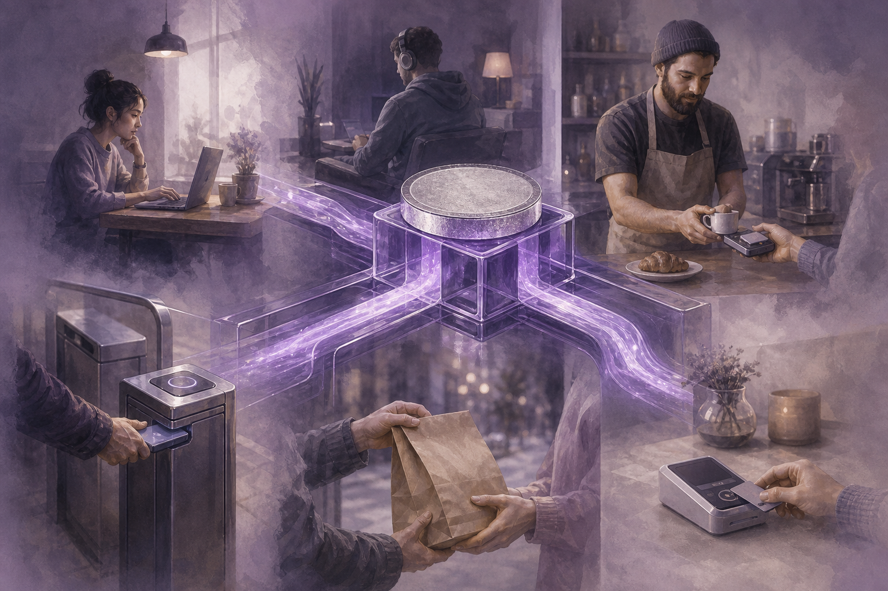

เริ่มง่ายๆ จาก custodial wallet / spark wallet:
Wallet of Satoshi, Blink, Speed, Tether Wallet
โหลดแอปแล้วใช้ได้เลย ไม่ต้องออนไลน์ตลอดเวลา ไม่ต้องบริหาร channel liquidity แต่ยังต้องพึ่งพาและไว้ใจตัวกลาง
คือ Layer 2 ที่ได้รับความนิยมกว้างขวาง
ที่สุดในตอนนี้
แนวคิดของมันคือการเอา bitcoin ใน layer 1 ไปล็อคไว้
เพื่อสร้างช่องทางส่งเงินระหว่างคอมพิวเตอร์ของผู้ใช้สองคน
Lightning ไม่ได้เป็นแค่ไอเดียลอยๆ
ตอนนี้เครือข่ายมีคอมพิวเตอร์ที่รัน Lightning node
นับหมื่นเครื่อง มี bitcoin ถูกล็อคไว้มากกว่า 3,700 BTC

มือใหม่เริ่มใช้งาน Lightning ค่อยๆ เริ่มจากง่ายไปหายาก
เริ่มง่ายๆ จาก custodial wallet / spark wallet:
Wallet of Satoshi, Blink, Speed, Tether Wallet
โหลดแอปแล้วใช้ได้เลย ไม่ต้องออนไลน์ตลอดเวลา ไม่ต้องบริหาร channel liquidity แต่ยังต้องพึ่งพาและไว้ใจตัวกลาง
เมื่อพร้อมท้าทาย ขยับไป non-custodial wallet:
Phoenix, Breez หรือรันโหนดเอง
ข้อดีคือคุมเงินได้มากขึ้น พึ่งพาตัวกลางน้อยลง หรืออาจไม่พึ่งเลย แต่แลกมาด้วยความยุ่งยากในการบริหารจัดการ
แนวคิดนี้ให้ประสิทธิภาพในระดับที่น่าพอใจ
แต่ยุ่งยากเกินไปสำหรับคนธรรมดาที่จะบริหาร
จัดการเองได้ หลายคนจึงยังคงใช้งาน Lightning แบบผ่านตัวกลาง